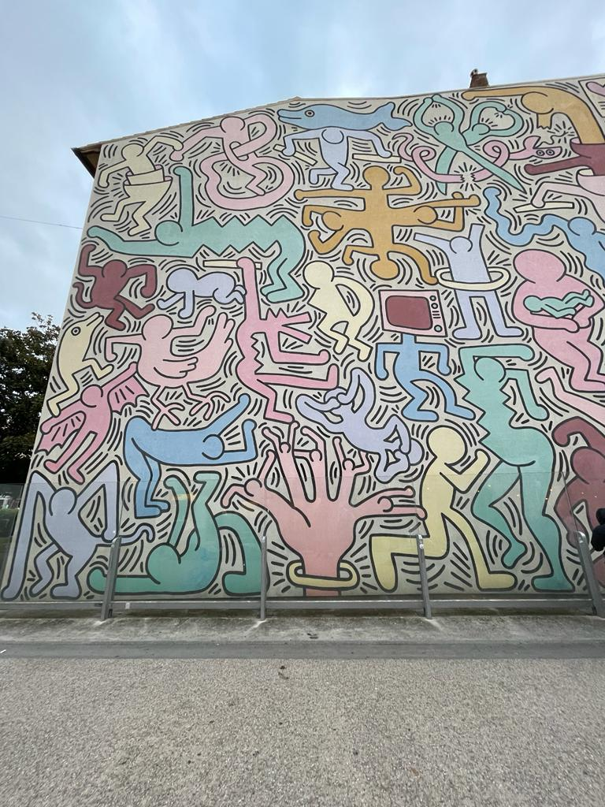
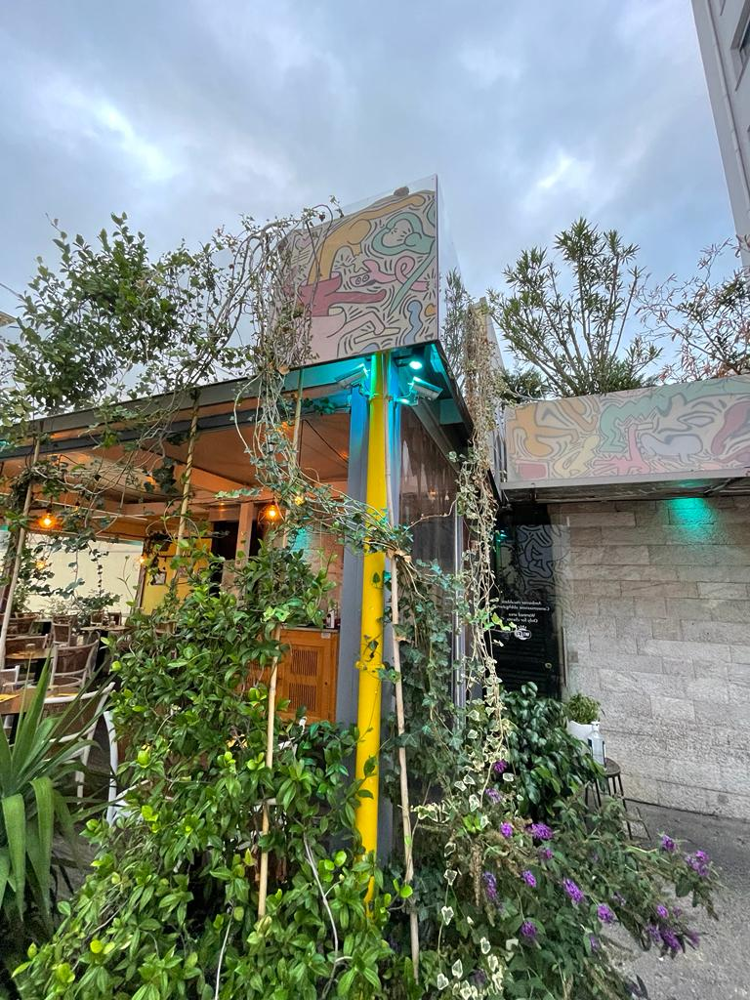

Geheimtip

___
Tutomondo
"Tuttomondo" in Pisa ist ein faszinierendes Kunstwerk des weltberühmten Künstlers Keith Haring.
Dieses beeindruckende Wandgemälde wurde 1989 geschaffen und ziert eine Seitenwand eines Gebäudes nahe dem Bahnhof von Pisa.
Das Kunstwerk zeigt Haring's typische, lebendige Figuren und Symbole und ist ein lebhaftes Beispiel für seine Kunst, die sozialen und politischen Botschaften vermittelt.
"Tuttomondo" übersetzt sich als "Die ganze Welt" und drückt die Idee der universellen Einheit und Zusammengehörigkeit aus.
Das Werk ist ein bedeutender Beitrag zur Straßenkunst und ein kulturelles Juwel in Pisa, das Besucher mit seiner Energie und Bedeutung begeistert.
mehr

___
Tutomondo im Spiegel:
Gegenüber dem "Tuttomondo" befindet sich ein charmantes Café, das die Kunst von Keith Haring auf interessante Weise widerspiegelt.
Das Café hat eine lebendige und moderne Atmosphäre, die Haring's lebhafte und dynamische Kunst perfekt ergänzt.
Die Inneneinrichtung könnte von Haring selbst entworfen worden sein, mit bunten Sitzgelegenheiten und kreativen Dekorationen, die an seine charakteristischen Figuren erinnern.
Hier können Besucher inmitten einer Umgebung, die die Ideen der Kunst von "Tuttomondo" aufgreift, entspannen, einen Kaffee genießen und die Botschaften der universellen Einheit und des positiven Wandels auf sich wirken lassen.
Es ist ein Ort, an dem Kunst und Alltag auf inspirierende Weise miteinander verschmelzen und die Vision von Keith Haring weiterleben lässt.
 ___
___